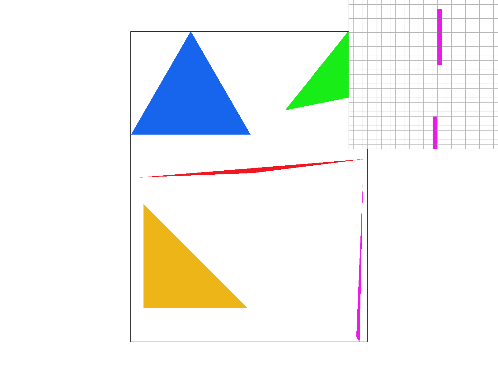

Overview
In this project we explored the rasterization process tarting from simple triangles with single colors and with colored vertices. We then expanded to include rendering textures. To improve the quality of the rendered output, we implemented sampling rate techniques, pixel interpolation, and mipmap interpolation methods. The final result is we are able to render many SVG images onto our screen. We learned a lot about how to work with C++ vectors as well as how to work with a screen buffer and frame buffer. We also got experience visually debugging our programs.
Section I: Rasterization
Part 1: Rasterizing single-color triangles
We first compute a bounding box for the triangle by computing the max of all x and y coordinates and then the min of all x and y coordinates. We then iterate through every pixel in the bounding box and determine whether the candidate pixel is in the triangle using a function called inside that we defined that checks if a point is on the positive side of a line. We call the inside function 3 times both for the clockwise and counterclockwise winding orders to determine if the point is in the triangle.
We only check each pixel within the bounding box of the triangle once.

Part 2: Antialiasing triangles
In rasterize_traingle, we implemented supersampling rasterization by not calling fill_pixel because fill_pixel will fill every subpixel in (x,y). Instead, we converted the given vertices into the supersampled coordinate system and tested if each individual subpixel was inside the 3 lines. Then, we manually filled the sample_buffer if it passes the inside test.
Our inside helper function takes in 2 vertices and an (x,y) coordinate to test whether that (x,y) is inside the line connected by the 2 vertices.
In resolve_to_framebuffer, instead of using the color of 1 pixel (x,y), we averaged the rgb values of the nxn subpixels within (x,y). As seen in the screenshots, this averaging/supersampling technique was helpful in reducing jagged lines and made the overall images look much smoother. Instead of the stark transition from a white pixel to a colored pixel, there were smoother transitions and opaque colors in the pixel.
We also made small modifications to set_framebuffer_target and set_sample_rate to extend the sample_buffer's length to account for supersampling.
|

|
|
|
Part 3: Transforms
We were trying to make cubeman look like it's frolicking in the coordinate space so we rotated its left and right arms as well as its legs to give it look like it's dancing/jumping.
|
|
Section II: Sampling
Part 4: Barycentric coordinates
We used the linear algebra view of computing the baycentric view coordinates. Given 3 vertices and a coordinate(i,j) we're interpolating from, we construct a matrix using the 3 vertices and multiply its inverse with the vector of [i, j, 1]. This gives us the values of alpha, beta, and gamma that we can use to weight the 3 colors c0, c1, and c2.
This can be seen in our example triangle with 3 corners of red, green, and blue where it becomes an evenly weighted gradient in the center.
|
|

|
Part 5: "Pixel sampling" for texture mapping
To render a textured triangle we use the same supersampling approach as for the triangle with the colored vertices. To determine the color for each supersampled pixel, we map from the sample buffer space to the texture space by applying the barycentric coordinates we determined from the sample space to the provided texture space coordinates. Once we know the texture coordinates, we perform nearest neighbor sampling by converting the coordinates to integers. For the bilinear sampling, we determine the four pixels that are nearest to the desired texture location and linearly weight each of them. We make sure to handle edge cases on the border of the image.
For a supersampling rate of 1, we notice that the bilinear filtering has a much smoother result around the text of the Berkeley logo than nearest neighbor sampling. For the supersampling rate of 16, we don't notice much of a difference between the two sampling methods. This makes sense as the supersampling will already smooth out the image for high sampling rates. There will be a larger difference between the sampling methods when the sampling rate is lower, as the image won't already have the smoothing effects of a larger supersampling rate.
|
|
|
|
|
|
Part 6: "Level sampling" with mipmaps for texture mapping
Level sampling involves choosing or interpolating between different mipmap levels of a texture. We achieve this by computing how a change in sample buffer coordinates corresponds to a change in texture space coordinates. We do this by computing how much a change by 1 pixel in the x and y directions in sample buffer coordinates causes a change in texture coordinates (by computing the barycentric texture space coordinates for x+1 and y+1 points). Then we scale the derivates by the width and height of the texture to determine how many pixels we would move in the texture space. If we stride by a large number of pixels in the texture space, then it makes sense to use a higher mipmap level (one that is lower resolution).
Pixel sampling tradeoffs: The options are bilinear and nearest sampling methods. Nearest is faster than bilinear sampling because we only need to look at the color value of one pixel whereas we need to look at four color values for bilinear and do additional linear interpolations calculations. Memory requirements are very similar for both, but bilinear requires more compute.
Level sampling tradeoffs: The options are zero, nearest, and linear. The zero sampling method has the least computational cost as we always know the level is 0. Linear has the highest computational cost as we have to sample colors at two layers and linearly interpolate between them. Memory requirements for zero level sampling are the least as we don't have to store mipmap levels in memory besides the first level.
Sampling rate tradeoffs: The higher the sampling rate, the higher the memory usage as we have to store a larger sample buffer. Larger sampling rate also has higher compute cost as we need to average pixels across a larger region when going from the sample buffer to the screen buffer.

|
|
|
|
|